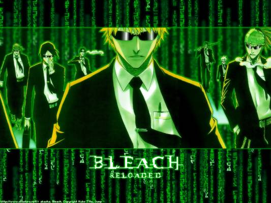

Forums galactiques > Assemblée Galactique : diplomatie officielle > Elections du Sénat.
Angelus L Oméga | 14 | |
Huor Silimaure | 4 | |
Vecna | 5 | |
Mablane | 11 | |
Herbert Von Panzer | 4 | |
Lalie Pink | 7 | |
Eiganjo | 7 | |
Till | 1 | |
Eragon | 4 | |
Lord Vermilion | 4 | |
athéna | 7 | |
settra | 0 | |
BAALBERITH | 14 | |
Samsagace | 1 | |
Chil powo | 15 | |
Mata Hari | 2 | |
sayan69 | 8 | |
le renard | 1 | |
Hannibal | 6 | |
Prince Zheng | 2 | |
Paymon | 4 | |
Mac Polar III | 24 | |
Gerolstein | 0 | |
Mahal | 3 | |
Total : 148 vote(s) | ||
| Gouvernement Respect diplomatique : 126  06/06 ETU 20:52 | Score : 5 Détails Une nouvelle ère s’annonce, celle des Sénateurs.
Citoyens d’Origine, voici l’avènement de votre démocratie tant désirée. A vous d’accomplir votre geste de citoyen, la démocratie est maintenant entre vos mains. Ces élections dureront 3 jours et au bout de celle-ci seront nommés Sénateurs les 5 commandants ayant reçus le plus de voix. S’il y a ex-æquo, un sondage d’un jour sera lancé pour départager les commandants ex-æquo. Ce sera au Sénat d’améliorer le système actuel, il sera seul représentant du gouvernement en attendant. Les programmes sont disponibles dans le sujet Programme électoral. Si quelqu’un désire émettre des commentaires, qu’il crée un autre sujet, celui sera réservé aux confirmations de vote. Choisissez bien ces futurs piliers de l’avenir ! | ||
| xarez Respect diplomatique : 2  06/06 ETU 20:54 | Score : 0 Détails Pouquoi créer un sujet qui a déjà été créer. Il faut voter à celui là ou à l'autre?
| ||
| Mablane Respect diplomatique : 1399  06/06 ETU 20:55 | Score : 3 Détails L'autre est erroné car un commandant a été oublié...
Il peut toujours servir de sondage ! | ||
| bartarengis Respect diplomatique : 20  06/06 ETU 20:55  | Score : 1 Détails Bartarengis se leva l'air légerement irité et dit:
"Il faut voter sur celui ci car dans l'autre il manqué des noms." Et il se rassit l'air apaisé. HRP/Pardon je me suis fait d'oubler merci de ne pas voter\HRP | ||
| Chil powo Respect diplomatique : 406  06/06 ETU 20:57 | Score : 1 Détails Je demande a chaque personne qui vote de s’intéresser rapidement aux dernière activités dans
l'assemblé galactique !! Il faut bien se rendre compte qu'il faut absolument élire les MEILLEURS candidat !! Je nous félicite de plus tous pour ce qui est en train de se passer ! C'est magnifique On sentait l'émotion dans la voie du commandant Chil Powo ; Merci | ||
| Angelus L Oméga Respect diplomatique : 1305  06/06 ETU 20:58 | Score : 0 Détails Seul celui-ci compte, l'autre étant caduque suite à un oubli.
Maintenant, à chacun de faire son devoir de citoyen, en son âme et conscience, pour une galaxie meilleure. | ||
| Mablane Respect diplomatique : 1399 06/06 ETU 21:00 | Score : 3 Détails Que le meilleur gagne !
Il y a ici là finalité de tous nos efforts pour l'instauration de la démocratie et de la liberté ! Que chacun vote, en connaissance de cause ! Une nouvelle ère commence ! J'espère que ce message sera transmis aux quatres coins de la galaxie ! Le premier Sénat Universel va être voté devant nos yeux ! | ||
| Solon Respect diplomatique : 412  06/06 ETU 21:03 | Score : 1 Détails Désolé de gâcher la fête, mais y'a t-il la présence d'un choix "vote blanc" (ayant déjà voté je ne suis pas sur de ce que j’affirme) car on aurait une impression de vote forcé. Cependant ceux qui n’aiment personne n'ont qu’à pas voter du tout...
| ||
| LE NORMAND Respect diplomatique : 275  06/06 ETU 21:05 | Score : 2 Détails *** LE NORMAND,pour une fois déclara sans fioriture.***
" Ces élections résultent de beaucoup de travail de la part de nombreux commandant que je voudrais féliciter.Bonne chance à tous et que le meilleur gagne." *** LE NORMANd se rassoit,et pour une fois à un vif sourire à ses lèvres.*** | ||
| Angelus L Oméga Respect diplomatique : 1305 06/06 ETU 21:06 | Score : 2 Détails En effet, le vote blanc a été oublié, mais pour cette occasion unique d’installer la démocratie, je pense que nous pouvons ne pas y faire trop attention, et ainsi avoir conscience que le nombre de votes total ne sera pas tout à fait représentatif du taux de participation.
| ||
| qui-gon jinnAA Respect diplomatique : 224  06/06 ETU 21:07 | Score : 3 Détails Bon je répète ce que jai dit sur l'autre topic.Je soutiens Mac Polar car je pense qu'il ferait très bien son travail de sénateur et qu'il accomplierai toutes les missions dont il serait chargé!
Je suis avec vous MAC POLAR III! | ||
| Shendris Respect diplomatique : 43  06/06 ETU 21:08 | Score : 2 Détails Et bien, apres tant de debats souvent tres animé, nous voila enfin arrivé a leur fin ...
C'est avec une grande satisfaction que je viens ajouter mon vote a celui des autres. J'invite tous les commandants a en faire autant, apres avoir prit conscience des differentes idées emmises par chaque candidats. | ||
| Mablane Respect diplomatique : 1399 06/06 ETU 21:08 | Score : 5 Détails De toute façon, un vote blanc est inutile, est comme le dit Solon, autant ne pas voter du tout...
De plus, j'espère que chacun votera un commandant, car là est la pure voie de la démocratie... Cependant, celui qui ne connait pas un minimum les différents programmes ne devrait pas voter, car son vote pourrait être erronné... Pour Qui-gon-Jin : Mac Polar est en effet un grand personnage, dont je soutiens également la candidature, malgré sa "rivalité". Je pense qu'il serait un exellent sénateur... | ||
| Vecna Respect diplomatique : 423  06/06 ETU 21:21 | Score : 2 Détails de plus ces éléctions seront vraiement intéréssante pour étudier notre galaxie d'un point de vue sociologique
c'est a dire combien de commandants s'interesse au devenir de la galaxie origine ! j'éspère que les votes seront trés nombreux ! | ||
| Thot71 Respect diplomatique : 424  06/06 ETU 21:23 | Score : 2 Détails Commandant !!!
Cette voix résonna dans toute la salle ! Tous les Commandants se retournérent ! Thot71 c'était a nouveau levé et adressé a tous ! Il marcha d'un pas vif et alerte jusqu'à l'estrade ! Commandant, appelez vous ces elections une democratie ? Pourquoi je m'emporte ? Car combien serons nous a voter ? 80 personnes, au maximum ... Et de combien de personne est composé Origine ??? Je n'ai pas besoin d'aller plus loin je pense que vous voyez tout de suite le probleme ! Votre Démocratie ne sera en aucun cas une veritable Démocratie si moins de la moitié de la population de la Galaxie participe ... Certains me répondront : il n'ont qu'à venir ici, sur ce forum, et donner leurs avis ! Plusieurs Comandants acquieserent ... Et si c'est votre politique qu'il n'aime pas ? Quel meilleurs moyens de prouver la desafection qu'ils ont pour la Démocratie en ne votant pas ? Ne pas voter ne signifie pas ne pas n'interesser a la Democratie, mais ne pas s'interesser a la vie politique ... Ils peuvent etre actifs, mais les decisions des grands ne les interessent pas ... En tout cas, un regime doit etre adopté, mais celui ci ne sera potable que s'il l'est par la majorité ! Thot 71 retourna a sa place, toujours impassible. | ||
| Solon Respect diplomatique : 412 06/06 ETU 21:26 | Score : 3 Détails Des élections sont faites pour que tout le monde vote, s'ils ne votent pas c'est leur problème, les lois seront appliquées sans eux, ils ne viendront pas se plaindre ensuite de pas avoir été prévenus
| ||
| Angelus L Oméga Respect diplomatique : 1305 06/06 ETU 21:27 | Score : 3 Détails Je reconnais l’importance du vote blanc en général, comme partie intégrante de la démocratie, mais cela fait trop longtemps que la galaxie attendait enfin des élections, je pense donc qu’on peut « ignorer » cet incident pour ne pas retarder encore ces élections déjà en retard.
On sait que le système actuel a de gros défauts, les premiers Sénateurs devront construire de nouvelles bases plus démocratiques. | ||
| Thot71 Respect diplomatique : 424 06/06 ETU 21:33 | Score : 2 Détails Pour repondre a Solon, que singifie le mot Democratie ? Il vient d'une langue aujourd'hui eteinte, de notre planète mére, singifiant "le pouvoir au peuple" !
Vous pensez réelement que ne pas faire participer tout le peuple sera une Démocratie ? Pour moi, se sera une Démocratie faite pour l'élite, ceux qui prennent le temps de venir ici ... Tant pis pour les autres ? Ce n'est pas la mentalité d'une démocratie, desolé ! Et non pour ceux qui ne viennent pas ici, mais joue quand meme ! De plus, pour vous, 80 votants sur 380 et quelques, vous n'appelez ca qu'une erreur ? Près de 3/4 de non votant, cela me parait aberant, pas vous ? Ce n'est plus un vote, c'est un desinteret total ... IL faudrait informer tout les Commandants d'Origine, et cela n'est pas impossible vous le savez bien !!! IL faut des elections Démocratiques, avec un taux d'abstention raisonnable ( au moins la moitié de participant ) !!! Thot71 se rassit | ||
| Solon Respect diplomatique : 412 06/06 ETU 21:36 | Score : 2 Détails C'est le reste du peuple qui volontairement ne repond pas à l'appel des urnes! C'est donc bien une démocratie, l'abstention c'est la faute de personne...
| ||
| LE NORMAND Respect diplomatique : 275 06/06 ETU 21:39 | Score : 4 Détails *** LE NORMAND,fasciné par ce nouveau venu, déclare alors.***
" J'ai lu des textes anciens,de la préhistoire même,et certains disait ceci: Les absents ont toujours tort. J'ai retenu ce proverbe et l'expose aujourd'hui afin d'exprimer mon avis.Nous ne pouvons pas forcer tout le monde a voté,soit.nous ne pouvons pas non plus forcé tout les commandants a participé à la politique.Mais que devons nous faire,ne laissez aucun système politique,ignorer la politique et faire ce que bon nous semble.Je crois qu'il faut s'occuper de la politique et inciter tous les commandants a s'exprimer mais on ne peut pas faire plus.nous n'allons tout de même pas renier la politique car tous les commandants ne s'y intéresse pas?Bien cordialement.LE NORMAND." *** LE NORMAND se rassoit et boit un verre de délicieux Fuhio5000.*** |
Forums galactiques > Assemblée Galactique : diplomatie officielle > Elections du Sénat.